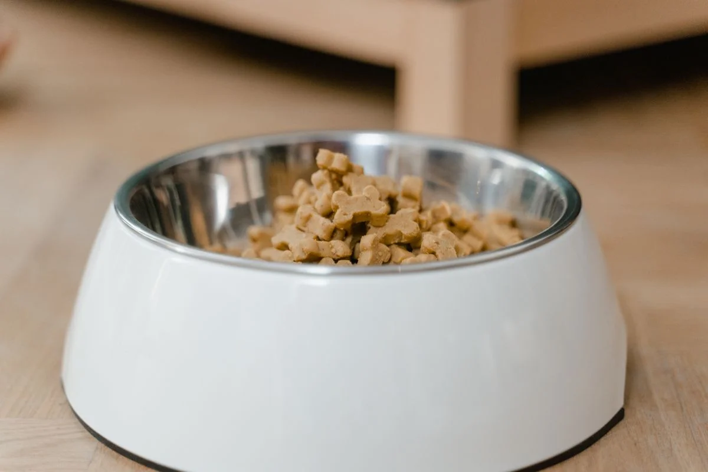
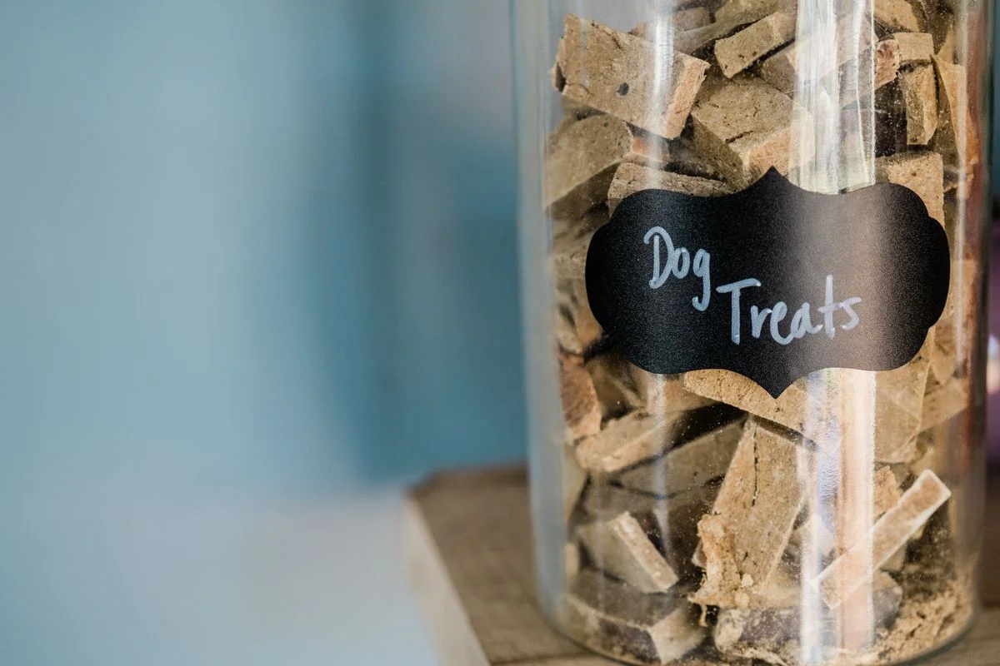

Este post contém links de afiliado. Podemos receber uma comissão em compras feitas através deles, sem custo adicional para você.
Ração espalhada pela casa vira convite certo para formigas, e não é raro ver comedouros automáticos anunciados como "anti-formiga" no Mercado Livre. A pergunta é se isso é só marketing ou se existe mesmo um mecanismo por trás. A resposta é que existe, sim, um princípio físico real — mas ele tem limites que valem a pena entender antes de comprar.
Key Takeaways
- A função "anti-formiga" geralmente é um canal ou moat (fosso) preenchido com água ou óleo ao redor da base do comedouro, criando uma barreira física que as formigas não conseguem atravessar nadando.
- Não existe estudo público medindo a eficácia em percentual — o que existe é um princípio de engenharia bem estabelecido em armadilhas e proteções contra insetos rastejantes.
- A eficácia depende diretamente da manutenção: canal seco, sujo ou com "pontes" de detritos deixa de funcionar como barreira.
- É uma solução complementar à limpeza da área ao redor do comedouro, não um substituto dela.
Para entender onde esse tipo de recurso se encaixa entre os demais critérios de compra, vale consultar o guia completo de comedouro automático para pet.
O design mais comum é um canal ou sulco na base do comedouro, ao redor do pote de ração, que o tutor preenche com água (alguns fabricantes recomendam um pouco de óleo por cima, para reduzir a evaporação). O princípio é simples: formigas e outros insetos rastejantes não conseguem atravessar essa faixa de líquido para chegar até a ração. A mesma lógica é usada de forma caseira por tutores que não têm um comedouro anti-formiga pronto: posicionar o pote de ração dentro de um recipiente maior com uma fina camada de água, sem que o líquido toque a ração, já cria essa barreira (Tudo de Bicho, retrieved 2026-08-21). Vale reforçar: essa explicação descreve como o princípio físico funciona de forma geral, não uma medição de eficácia específica para o modelo de comedouro anunciado, sobre a qual não há estudo público.
Não é uma tecnologia proprietária nem um recurso eletrônico — é engenharia de barreira física, o mesmo princípio por trás de colocar as pernas de uma mesa de doces dentro de potes com água em festas ao ar livre. A vantagem de vir integrado ao comedouro é o formato: o canal já é dimensionado para não vazar para dentro do compartimento de ração nem ser facilmente derrubado pelo pet.
Ela não afasta formigas do ambiente, não mata a colônia e não impede que outros insetos voadores cheguem até a ração. Também não resolve infestações já estabelecidas na casa — nesses casos, o problema de origem (uma trilha de formigas na cozinha, por exemplo) precisa ser tratado separadamente, geralmente com o auxílio de um dedetizador ou de iscas específicas, mantendo distância segura do comedouro do pet.

Uma barreira anti-formiga mal cuidada simplesmente para de funcionar. Os pontos de atenção mais comuns são: nível de água no canal, que evapora mais rápido em dias quentes e precisa ser reposto a cada 2 ou 3 dias; limpeza do canal, já que restos de ração, poeira e pelos podem se acumular e formar uma "ponte" seca sobre a qual as formigas atravessam sem tocar a água; e troca completa da água semanalmente, para evitar proliferação de mosquitos e bactérias no líquido parado. Negligenciar qualquer um desses pontos reduz a barreira a um detalhe decorativo.
Depende de dois fatores: onde o comedouro fica posicionado e o histórico de formigas na casa. Em apartamentos com pouca ocorrência de formigas, o recurso é um "seguro" barato — não custa muito a mais e evita um problema que pode surgir de repente, especialmente em ração com pedaços úmidos ou petiscos misturados. Já em casas térreas ou regiões com infestação recorrente, a barreira sozinha provavelmente não é suficiente, e vale considerar medidas complementares no ambiente ao redor do comedouro, além de manter o equipamento sempre limpo. Para quem quer comparar outras características além dessa, o comparativo completo dos comedouros automáticos mais vendidos ajuda a entender o que mais pesa na escolha.
Quem já tem um comedouro sem esse recurso não precisa trocar de equipamento. Uma solução caseira é apoiar o comedouro sobre um prato raso e largo com uma fina camada de água, criando o mesmo efeito de "ilha" isolada — funciona pelo mesmo princípio físico, embora exija mais atenção para não derramar ou ser derrubado pelo pet. Vaselina ou fita adesiva dupla-face ao redor da base também são usadas informalmente, mas tendem a sujar mais rápido e exigir reaplicação frequente.
A função anti-formiga em comedouros automáticos é real, baseada em um princípio de barreira física bem estabelecido, e não em uma promessa vazia de marketing. Mas ela só entrega o que promete com manutenção constante — água reposta, canal limpo e trocas regulares. Sem esse cuidado, o recurso perde a eficácia rapidamente, então vale tratá-lo como mais um item da rotina de limpeza do comedouro, não como uma solução definitiva e permanente.
guia completo de comedouro automático para pet · melhor alimentador automático para gatos
Escrito por Nildo Alves. Veja nossa política editorial e como verificamos as fontes citadas neste artigo.
🐾 Confira o preço e a disponibilidade atual no Mercado Livre.
Ver no Mercado Livre →Link de afiliado: podemos receber uma comissão por compras feitas através deste link, sem custo adicional para você.
Não existe garantia de 100%. O sistema é uma barreira física (geralmente um canal com água ou óleo ao redor do pote) que dificulta bastante o acesso das formigas, mas a eficácia depende da manutenção — se o canal secar ou acumular sujeira formando uma "ponte", formigas podem atravessar.
Na maioria dos modelos, recomenda-se checar o nível a cada 2 ou 3 dias e trocar a água semanalmente, ou com mais frequência em climas quentes, já que a evaporação reduz o volume e compromete a barreira.
É possível improvisar colocando o comedouro sobre um prato raso com água, criando um efeito de "ilha", mas comedouros já projetados com esse canal integrado costumam ser mais estáveis e menos propensos a vazamento ou derrubamento pelo pet.
Não deveria, já que o canal fica na base externa do equipamento, isolado do compartimento de ração e do motor. Ainda assim, vale evitar que a água do canal transborde para dentro da estrutura do comedouro.
Nildo Alves — curadoria de produtos pet no Smart Pet Gadgets. Testa e pesquisa produtos para cães e gatos, cruzando especificações de fabricante com boas práticas veterinárias e dados de mercado.
Sobre o Smart Pet Gadgets · Contato · Política editorial e de afiliados